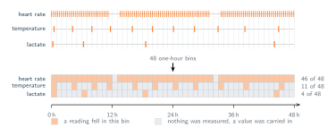
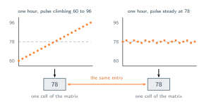
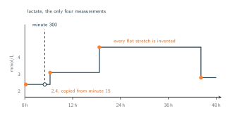
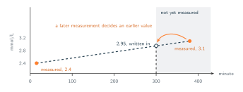
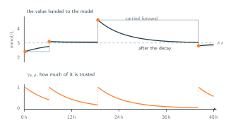

08 · Attention Over Time
Repairing Irregularities (Or Not)
Binning, forward filling, imputing, and feeding the gap as a feature.
Every repair presented in this section all share a common mechanism. They reconstruct a structured data table and then forward it to processing. The primary difference among them is the method used to fill the vacant cells. It is important to evaluate each approach carefully because these strategies represent the standard way irregular data is processed.
Discretising into bins
Choose a bin width, say one hour, so that bin $b$ covers the minutes $[\,60(b-1),\ 60b\,)$ for $b = 1, \dots, 48$, and collect the observations of channel $d$ that fall inside it:
Where the bin holds something, the cell takes the mean of it:
How often that rule applies depends entirely on the channel.
- Pulse. $|\mathcal{I}_{b,1}| \approx 42$ for almost every bin, so the rule applies 46 times out of 48 and forty-odd readings are replaced by one number.
- Temperature. $|\mathcal{I}_{b,2}| = 1$ for 11 bins and $0$ for the other 37.
- Lactate. $|\mathcal{I}_{b,3}| = 1$ for 4 bins and $0$ for the other 44.
Fill the empty cells with any method somehow, which the next subsections will show, and the output is a $48 \times 3$ matrix with every cell present, as the figure below shows.

Look at what the first column cost. The pulse arrived as forty-odd readings in that hour and the bin replaced them with their mean. Section 02 spent itself arguing that a single number carries no shape, and section 03 repaired that by making the unit a window of sixty numbers instead of one. Averaging inside the bin undoes exactly that repair. An hour in which the pulse climbed steadily from 60 to 96 and an hour in which it sat at 78 throughout both leave behind the entry 78, and the difference between them is gone before attention ever sees the matrix.

The obvious response is that we chose the wrong width, but the problem is that there is no width that works, since one parameter has to serve three channels whose rates differ. Make the bins one minute wide and the pulse survives almost intact, but the matrix is 2880 rows deep, the lactate holds 4 real entries against 2876 carried ones, and we are back to the eight million pairs that section 02 objected to. Make them twelve hours wide and the lactate starts making more sense, with three of its four bins holding a real measurement, whereas five hundred pulse readings are crushed into each single number. As we can see, any width setting ends up being a decision about which channel to damage.
Forward Fill
The bins that hold nothing still need an entry, and the cheapest answer is to repeat whatever was there last:
If we stop to think when $\mathcal{I}_{b,d}$ is empty the rule writes down a number that wasn't actually measured in reality, even though it is a copy of the last one seen. For lactate that means 44 of the 48 entries assert that the value has not moved since the previous blood draw, which is exactly the claim the next blood draw was ordered to check. The model receives 48 lactate values and has no way apriori to tell the 4 "original" measurements apart from the 44 copies. It will also learn from them given that a variable carried forward for hours at a time looks, in the training data, like a variable that rarely changes.

Interpolation
For a time $t$ with no observation, take the last observation of channel $d$ at or before it and the first one after it:
and place the value on the straight line joining them, at the fraction of the gap that $t$ has reached:
For the lactate at $t = 300$ the bracketing observations are $t_{i^-,d} = 15$ with $x_{i^-,d} = 2.4$ and $t_{i^+,d} = 380$ with $x_{i^+,d} = 3.1$, so $\lambda = 285/365 \approx 0.78$ and $\hat{x}_d(300) \approx 2.95$.
Compare this with forward fill, it is the same expression with $\lambda$ fixed at $0$ meaning it uses $i^-$ and never looks at $i^+$.
Interpolation is a function of $x_{i^+,d}$, and $t_{i^+,d} > t$ by construction, so the value standing at time $t$ is built from a measurement taken after $t$. Forward fill is more honest about direction. Even though interpolation is arguably a better estimate, it leaks information from the future.
The leak sits in the matrix, not in the model. Section 05's causal mask governs which tokens a query is allowed to read, and says nothing about which measurements went into building those tokens. A model can be perfectly causal and still be reading a blood test that has not been taken.

The Gap as a Feature
The three repairs so far all in a way try to hide the irregularity. This one takes a different paradigm as it detects the irregularity and hands it to the model. Alongside each cell, record whether anything was actually measured there,
and how long it has been since this channel was last measured, where $t_b$ is the time bin $b$ begins:
The model now receives three numbers per cell rather than one: a value, a flag saying whether that value was observed, and the age of the observation behind it. For the lactate at minute 300 that is $\bar{x} = 2.4$, $m = 0$, $\delta = 285$, which is reather quite different than the bare 2.4.
A model can go further and let stale values decay towards the channel's average, which is what GRU-D does (a recurrent network built for clinical records with missing values, which learns for each variable how quickly a reading goes stale):
Let's break each term of that down.
- $\delta_{b,d}$ is the age of the value in the cell, the minutes since channel $d$ was last actually measured. It is $0$ wherever $m_{b,d} = 1$.
- $w_d\,\delta_{b,d} + a_d$ turns that age into a staleness score. Where $w_d$ sets how fast this variable goes out of date, $a_d$ sets how long it is trusted before that begins. Both are learned and one pair per channel is configured.
- $\max(0,\, \cdot\,)$ stops the score going negative, so the exponent is never positive and the weight below can never exceed 1.
- $\exp(-\,\cdot\,)$ maps staleness onto $(0, 1]$. A reading taken a moment ago gives $\gamma_{b,d}$ near 1, one taken long ago gives $\gamma_{b,d}$ near 0.
- $\mu_d$ is the fallback, the mean of channel $d$ across the training set, which is what the model believes about this variable when it has nothing recent to go on.
- $\tilde{x}_{b,d}$ is the value finally handed on, the two blended in the proportion $\gamma_{b,d}$. The logic being the carried measurement while it is fresh, the population mean once it is not.

It marks the invented cells, which answers the complaint that the model could not tell the 4 from the 44, and it lets the model discount them in proportion to how stale they are.
And yet nothing about the rectangle has changed. We still chose a bin width, so the pulse is still averaged into one number per hour and the dilemma about that width is still exactly where we left it. The mask and the age do not avoid the damage, they label it: every $m_{b,d} = 0$ is an honest note attached to a cell that should never have needed to exist. It is a better record of the fabrication, not less fabrication.
The second objection is the one that matters, and section 06 already made it. Both $m_{b,d}$ and $\delta_{b,d}$ reach the model as part of a token's content, so they shape what that token contributes while the score deciding how much of it is used is still computed from $Q$ and $K$ built on index-based encodings. And $\delta_{b,d}$ measures the age of one channel's own last reading, not a distance between two tokens, so it still cannot say how far minute 300 sits from minute 1120. All four repairs change what the model is told and none of them changes what the model compares. The requirement from section 06 stands untouched: the score between two tokens has to be a function of $t_i$ and $t_j$.